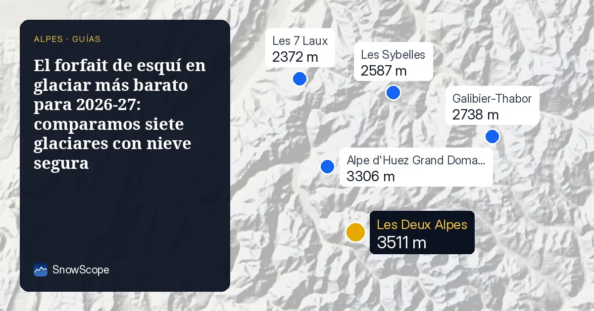

El forfait de esquí en glaciar más barato para 2026-27: comparamos siete glaciares con nieve segura
En noviembre y a principios de diciembre, un glaciar es el lugar más seguro para gastar dinero en un forfait. De los siete glaciares que hemos comparado, Les 2 Alpes y el Mölltaler Gletscher son los más baratos, con 68 y 69 EUR por un día de adulto, y el de Mölltal también tiene la nieve habitual más profunda del grupo en diciembre: 118 cm a media montaña.
Consulta la previsión de nieve en tiempo real de Les Deux Alpes en la app SnowScopeEspesor de nieve, alertas de nieve polvo y mapa 3D, gratis.
Siete glaciares, de 68 EUR a 86 CHF
Les 2 Alpes vende su forfait de un día del Grand Domaine a 68 EUR con el ticket flexible Freedom, y solo a 42 EUR en su fin de semana de apertura, el 28 y 29 de noviembre de 2026. El Mölltaler Gletscher, en Carintia, le sigue con 69 EUR en temporada baja, aunque ese precio viene de su última lista publicada, la de 2025-26, así que compruébalo antes de ir.
El Zugspitze, el único dominio de esquí en glaciar de Alemania, cuesta 70,5 EUR online. El Kitzsteinhorn, sobre Kaprun, cobra 74 EUR a principio de temporada y 82 EUR en temporada alta. Pitztal mantiene un solo precio todo el invierno, 77 EUR, y lo mismo hace Hintertux con 82 EUR. Saas-Fee, en Suiza, cierra la lista con 86 CHF.
Qué glaciares tienen realmente la nieve
No todos los dominios de esquí en glaciar tienen nieve alta en toda la estación. Nos hemos fijado en la media montaña, con nuestro historial de nieve de 46 inviernos pasados. El Mölltaler Gletscher, a 2593 m, suele tener 118 cm en diciembre y 23 semanas por temporada con al menos 50 cm en 9 de cada 10 inviernos. Pitztal, a 2576 m, tiene 82 cm y 22 semanas así. Saas-Fee tiene 68 cm y 21 semanas, Les 2 Alpes 77 cm y 20 semanas.
Hintertux y el Zugspitze llegan ambos a 15 semanas de nieve segura, con 53 cm y 56 cm en un diciembre habitual. El Kitzsteinhorn es la sorpresa: su media montaña está más baja, a 1894 m, y tiene 41 cm en diciembre con 11 semanas de nieve segura. El glaciar de arriba es fiable, pero la larga bajada hasta Kaprun a menudo no lo es a principios de invierno.
La mejor relación calidad-precio según el viaje
Para el precio más bajo con más nieve, el Mölltaler Gletscher gana en Austria: 69 EUR y la nieve más profunda de los siete. Es un dominio más pequeño, con 21 km de pistas, así que uno o dos días bastan. Pitztal es la opción de alta montaña para esquiadores fuertes, con remontes hasta 3424 m y el mismo precio todos los días.
En Francia, Les 2 Alpes es difícil de superar a finales de noviembre: 42 EUR en el fin de semana de apertura, remontes hasta 3511 m y 108 km de pistas una vez que abre todo el dominio. El Zugspitze tiene sentido desde Múnich para un solo día, y Saas-Fee es la opción si quieres nieve suiza y puedes vivir con el franco.
Esquiar en glaciar a principios de invierno: qué esperar
En noviembre, la mayoría de los glaciares solo abren unas pocas pistas en la parte alta, y normalmente bajas en remonte. La nieve suele estar dura por la mañana y los días son cortos, así que sale temprano. El viento fuerte puede cerrar los remontes más altos, y el frío a 3000 m es mucho más duro que en el valle.
Fuera de las pistas marcadas, los glaciares tienen grietas escondidas bajo la nieve fresca. No salgas nunca de la pista sin un guía y consulta el boletín de aludes de la zona antes de ir.
Reserva la estancia junto con el forfait
Un fin de semana de principio de temporada sale más barato si duermes en el valle: Flattach, bajo el Mölltaler Gletscher, los pueblos de Pitztal bajo el glaciar, o el valle de Tux. El mapa de este artículo muestra estancias por menos de 130 EUR la noche cerca de los cuatro glaciares que recomendamos, para el fin de semana del 27 al 29 de noviembre de 2026.
Los precios del mapa cambian según las fechas que elijas, y los precios de los remontes pueden cambiar durante el invierno. Compra en la web oficial de cada glaciar.
Consejos para esquiadores
- El más barato y con más nieve: Mölltaler Gletscher, 69 EUR y 118 cm en un diciembre habitual a 2593 m.
- Oferta de fin de semana de apertura: Les 2 Alpes a 42 EUR el 28 y 29 de noviembre de 2026.
- Kitzsteinhorn: genial arriba, flojo abajo a principios de invierno.
- No salgas nunca de las pistas marcadas en un glaciar sin un guía.
Más mapas (sitios externos)
Referencias y créditos
- Les 2 Alpes, official ski pass shop, prices 2026-27 www.skipass-2alpes.com/en/pricing
- Les 2 Alpes, official ski pass shop, opening weekend offer www.skipass-2alpes.com/fr/forfaits/ski
- Mölltaler Gletscher: official lift-pass prices (2025-26), checked 13 November 2026 www.moelltaler-gletscher.at/en/price-list/winter/moelltaler-gletscher
- Zugspitze: official lift-pass prices (2026-27), checked 13 November 2026 zugspitze.de/prices
- Kitzsteinhorn (Kaprun): official lift-pass prices (2026-27), checked 13 November 2026 www.kitzsteinhorn.at/en/tickets-prices/ski-board
- Pitztaler Gletscher: official lift-pass prices (2026-27), checked 13 November 2026 www.pitztaler-gletscher.at/media/pt_price_winter_26_27.pdf
- Hintertuxer Gletscher: official lift-pass prices (2026-27), checked 13 November 2026 www.hintertuxergletscher.at/en/tickets-rates/tickets-rates/rates-hintertux-glacier/
- Saas-Fee/Saastal, official ski pass prices 2026-27 www.saas-fee.ch/en/winter-in-the-saas-valley/ski-pass-prices/saas-fee
Sobre estas cifras
Cifras de nieve: histórico de nieve de SnowScope, 46 inviernos pasados (1980-81 a 2025-26) a tres alturas de la estación, un modelo del pasado corregido por altitud (una estimación para una zona, no partes de la estación). Remontes, pistas y acceso: las fuentes de abajo, comprobadas en la fecha indicada.
Citar este informe
Para investigación, docencia o prensa: cifras y gráficos reutilizables libremente bajo CC BY 4.0 con esta cita.
SnowScope (2026), El forfait de esquí en glaciar más barato para 2026-27: comparamos siete glaciares con nieve segura, https://snowscope.app/blog/es/2026/11/cheapest-glacier-ski-pass-2026-27-snow-sure.html, consultado el 2026-11-19
SnowScope (Atlas Labs). (2026, November 19). El forfait de esquí en glaciar más barato para 2026-27: comparamos siete glaciares con nieve segura. SnowScope snow reports. https://snowscope.app/blog/es/2026/11/cheapest-glacier-ski-pass-2026-27-snow-sure.html
BibTeX
@misc{snowscope2026cheapestglacierskipass20,
author = {{SnowScope (Atlas Labs)}},
title = {El forfait de esquí en glaciar más barato para 2026-27: comparamos siete glaciares con nieve segura},
year = {2026},
month = nov,
howpublished = {\url{https://snowscope.app/blog/es/2026/11/cheapest-glacier-ski-pass-2026-27-snow-sure.html}},
note = {Published 2026-11-19 14:07 UTC; accessed 2026-11-19}
}· CC BY 4.0 · Métodos, datos y herramientas →
Les Deux Alpes: nieve y temperatura según la altura, este invierno vs el pasado (herramientas) →
Sigue Les Deux Alpes
Gratis: un aviso cuando llega la nieve y la previsión cada mañana.